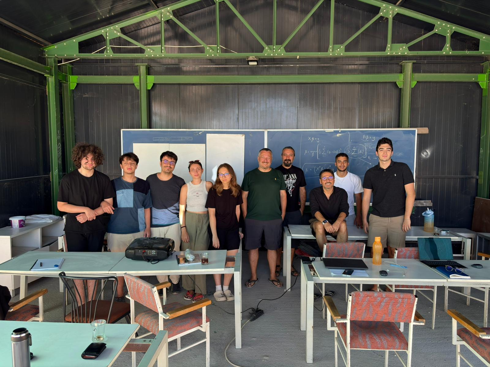
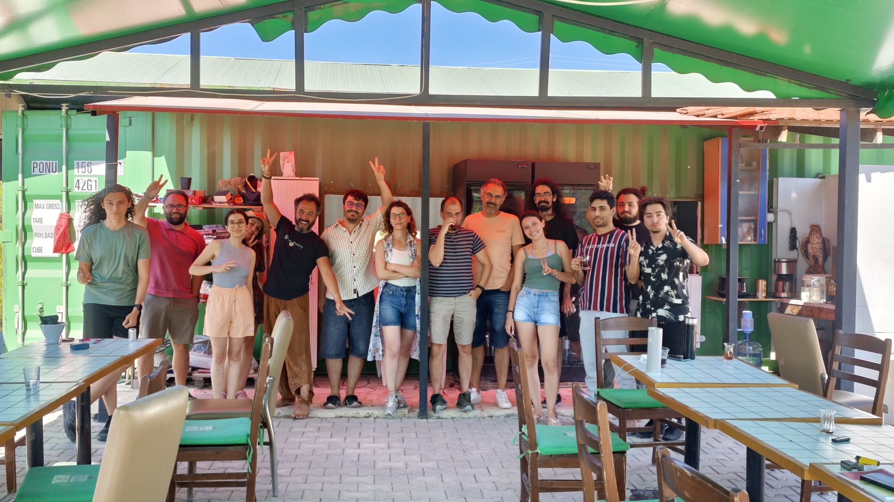
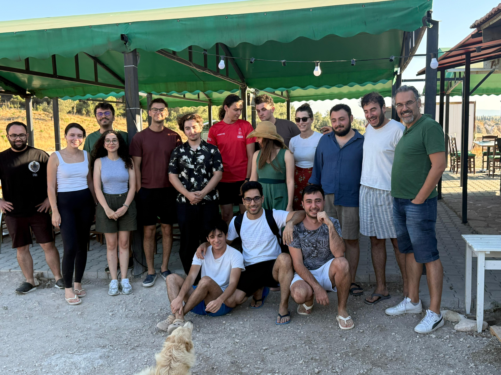
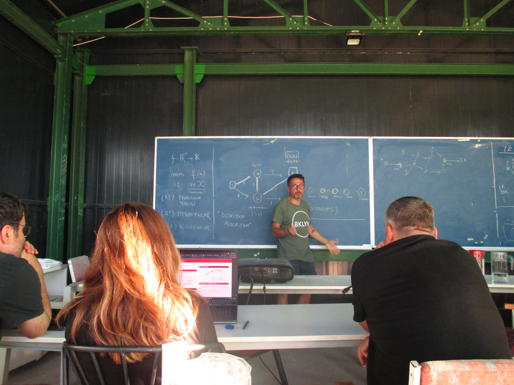
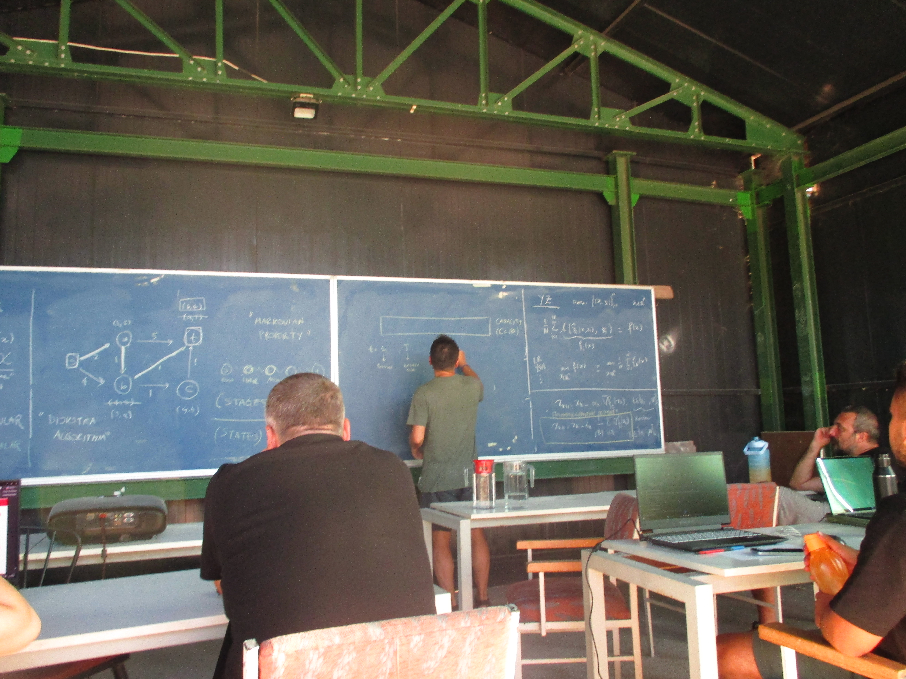
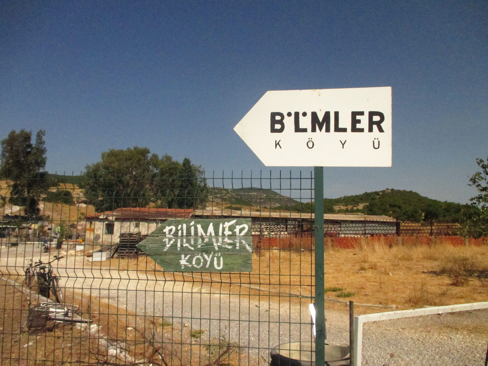
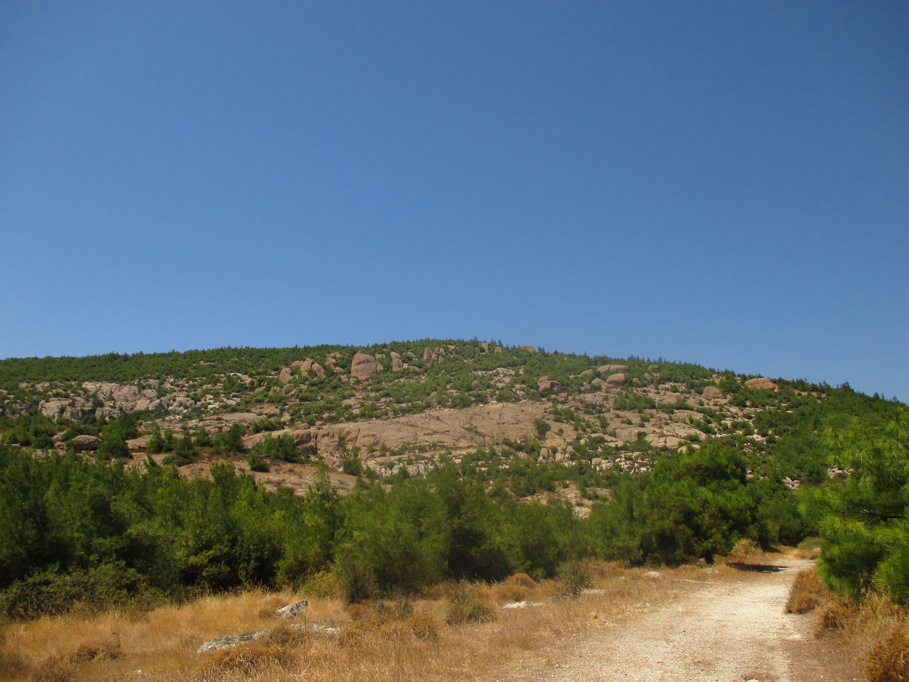

News / Bilimler Köyü 2026
Machine Learning Summer Schools at Bilimler Köyü
I attended two consecutive summer schools at Bilimler Köyü, covering the mathematical foundations of machine learning and advanced methods in the field.
Mathematical Foundations of Machine Learning
August 24–30, 2026
Lecturers: İlker Birbil, Özgür Martin, and Sinan Yıldırım.
Advanced Methods in Machine Learning
August 31–September 6, 2026
Lecturers: Çağatay Yıldız, Umut Şimşekli, Tolga Birdal, Sinan Yıldırım, and Gönenç Onay.
Photos






